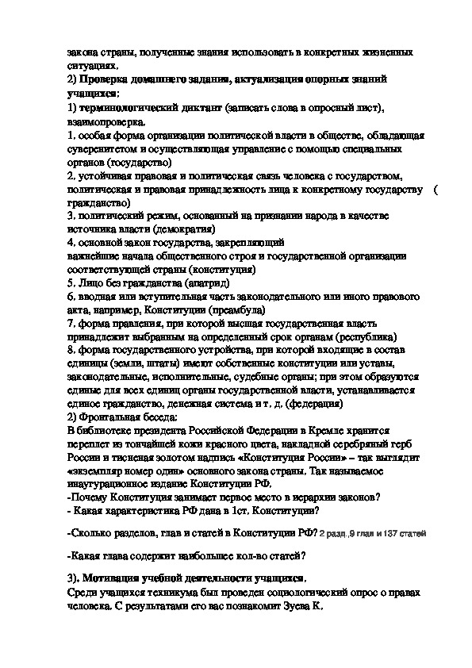

Welcome to Выплаты от государства
Компенсационные выплаты от государства - 2020 год
2020.11.24 18:32
Социальные пособия Пенсионерам Льготникам Социальные льготы mathlog.ru Социальные пособия Пенсионерам Льготникам Социальные льготы Главная Льготникам Компенсационные выплаты от государства
Компенсационные выплаты от государства
Самое главное по теме: "Компенсационные выплаты от государства" от специалистов в этой области. Актуальность информации на 2020 год или другие нюансы можно уточнить у дежурного консультанта.
Содержание
1 Социальные выплаты и пособия 2 Что такое компенсационные выплаты через ОКФ: правда или развод 3 Сайт «Объединенного компенсационного фонда» — правда или развод 4 Компенсационные выплаты с 2002 по 2018 год: что это такое, очередной развод или правда 5 Виды компенсационных выплат — кому положены по законодательству, размеры и порядок начисления 6 Компенсационные выплаты от государства: что это такое 7 Единовременные денежные выплаты в 2020 годуСоциальные выплаты и пособия
Что такое государственные социальные выплаты
Средства выделяются безвозмездно в следующих случаях:
Для частичного или полного возмещения временно утраченного дохода (пособие по безработице, по случаю временной утраты трудоспособности, по беременности и родам и др.). Оказания финансовой поддержки при росте расходов (помощь по случаю рождения ребенка, на погребение, семьям с детьми до 16 лет, и др.).Социальное пособие служит формой государственного соцобеспечения населения и регламентируется федеральным законодательством.
Характерные признаки социальных пособий
Пособие отличается от других видов социальных платежей тем, что денежные средства перечисляются льготнику напрямую и не зависят от вида соцподдержки или льготной категории заявителя.
Данный вид платежа обладает определенными особенностями:
При назначении социальных выплат учитывают следующие факторы:
Состояние здоровья или определенные жизненные обстоятельства Болезнь, травма, беременность и др. Особенности ведения быта Нуждаемость в жилплощади Изменения в социальном статусе Увольнение, рождение детей и др.Каждый из приведенных факторов может быть основанием для обращения за поддержкой от государства.
Вам нужна консультация эксперта по этому вопросу? Опишите вашу проблему и наши юристы свяжутся с вами в ближайшее время.
Федеральные и региональные социальные выплаты
Во многих случаях федеральное пособие является существенным дополнением к основному доходу льготника, а иногда и единственным источником средств для жизни.
Федеральные выплаты в России назначаются:
Гражданам, имеющие определенные заслуги перед государством (звание или награды): Герой СССР , РФ , Почетный донор России. Лица, получившие общегосударственный статус: ветераны и инвалиды труда, реабилитированные граждане, работники тыла, безработные и др.Федеральные платежи финансируются из средств федерального бюджета. Деньги выделяются по целевому признаку соответствующим министерствам и ведомствам, которые распределяют бюджет на календарный год.
Региональные платежи устанавливаются в каждом регионе самостоятельно местной администрацией. Выделение средств происходит за счет бюджетов регионов и поэтому могут отличаться величиной или вообще отсутствовать в некоторых областях (крае).
Региональная помощь предназначена лицам, наиболее нуждающимся в дополнительных мерах соцподдержки органов власти. Например, пенсионеры, ветераны труда, граждане, имеющие большой трудовой стаж.
Отдельные виды поддержки выплачиваются непосредственно работодателем заявителя. В дальнейшем эти средства компенсируются за счет средств государства.
Почему россияне верят ОКФ
Аферисты завоевывают доверие граждан разными способами и стараются получить от жертвы как можно больше денег, прежде чем она поймет, что ее обманывают. У многих сайт ОКФ вызывает доверие, так как:
Сам сайт выполнен в цветах российского флага — из-за этого может создаться впечатление, что ресурс официальный:
Изображение с мошеннического сайта ОКФ
«Официальный сайт» ОКФ наполнен отзывами людей, которым якобы уже перечислили компенсацию. Верить такому доказательству тоже не стоит: такие отзывы подделаны мошенниками:
Изображение с сайта мошенников
На самом деле, реальный пользователь не сможет поделиться своим мнением об ОКФ или ЕСЦ на сайте: при попытке авторизации на экране появляется сообщение об ошибке.
Изображение с мошеннического сайта ОКФ
Как не стать жертвой обмана
Проверить информацию о мерах социальной поддержки и положенных льготах можно на официальных государственных сайтах:
Пенсионного фонда России (ПФР) — www.pfrf.ru; Фонда социального страхования (ФСС) — fss.ru. Если сайт принадлежит региональному отделению Фонда, то в названии сайта указывается код региона: например, r10.fss.ru — отделение Фонда социального страхования по республике Карелия (код субъекта — 10). То же самое касается и адреса электронной почты; на портале Единой государственной информационной системы социального обеспечения (ЕГИССО).Если есть сомнения в правдивости информации, указанной в электронном письме, рекомендуется связаться с представителями официальных государственных организаций . К примеру, можно позвонить в региональное отделение Фонда социального страхования.
Сотрудники Пенсионного Фонда, Фонда социального страхования или иной официальной организации никогда не попросят в телефонном разговоре назвать номер банковской карты, код с ее обратной стороны или какой-либо код из СМС. Если подобные просьбы поступают от собеседника, можно с уверенностью утверждать, что это мошенник.
Кто может претендовать на пособия
Такая социальная выплата предназначена в основном для граждан, которые потеряли трудоспособность или кормильца.
К ним относят лица следующих льготных категорий:
одинокие пенсионеры, неспособные больше трудиться; многодетные семьи, при наличии детей до 18 лет (или до 23 лет — студентов дневного отделения); лица, получившие инвалидность, в том числе дети; дети в возрасте до 18 лет, у которых есть родители-инвалиды или пенсионеры; дети, воспитывающиеся без одного родителя (отца или матери); дети-сироты и дети до 18 лет, оставшиеся без родителей; граждане, имеющие государственные знаки отличия (звания, награды); студенты дневного отделения, имеющие детей; лица, ухаживающие за инвалидом 1 группы или ребенком-инвалидом; беременные женщины и находящиеся в декрете; лица, попавшие под сокращение на предприятии.Всем вышеуказанным категориям населения государство гарантирует выделение средств из федерального бюджета. Власти в регионах не могут отменять данные привилегии.
Кто имеет право на компенсационные выплаты по социальному обеспечению
Существует ряд лиц, которым выплачиваются компенсации государством – так называемая социальная форма выплат. К ним относятся:
люди, работающие и живущие на Крайнем Севере; учащиеся ВУЗов, находящиеся в вынужденном академическом отпуске; лица, которые должны ухаживать за нетрудоспособном членом семьи и поэтому не выходящие на работу; граждане, потерявшие здоровье из-за техногенных катастроф (ликвидаторы Чернобыльской АЭС, проживающие на территории НПО «Маяк»).Социальные выплаты
Социальные выплаты положены тем, кто находится в социально-опасном положении. Также материальную помощь получают граждане с инвалидностью или ухаживающие за людьми с ограниченными возможностями здоровья.
Общая характеристика
Материальная поддержка со стороны государства, в отличие от других видов финансовой помощи гражданам, определяется условиями, в которых оказался человек. Главная задача – поддержка и содействие тем, кто приносит пользу обществу и незаменимым специалистам.
Условия выплаты:
Вид компенсации определяет источник финансирования; Компенсация назначается на законных основаниях конкретному гражданину; На решение по выплатам не влияет финансовое положение граждан, хотя в ряде случаев, указанных в законодательстве, возможны исключения; Компенсации выплачиваются в соответствии с законодательством гражданам РФ.Новости по теме
Пособия, социальные выплаты и компенсации вырастут в России с 1 февраля на 3%. Об этом сообщает Минтруд.
Малоимущие граждане в России могут претендовать на получение дополнительных социальных выплат. Живя на минимальные доходы, которые не достигают размера минимального прожиточного минимума, многие даже не догадываются о том, что имеют право на государственную помощь.
Читайте так же: Пенсионеры увольняются для перерасчета пенсииПо статистическим данным на 1 января 2019 года, более 30 процентов Российских семей могут претендовать на статус малоимущих.
Что это?
Компенсационные выплаты гражданам РФ выделяются из государственного бюджета. Чтобы гражданин РФ получил компенсационную выплату, определяется вид возмещения и законодательные акты, по которым выделяются те или иные средства.
Компенсации можно разделить на две основные группы:
выплаты, относящиеся к области трудового права; социальные компенсации.Компенсационные и стимулирующие выплаты работникам бюджетной сферы
Работники госучреждений получают дополнительные компенсационные надбавки:
при работе на вредном производстве или в опасных условиях производства; когда работнику предлагается совмещать несколько должностей; при сверхурочной работе, в неурочное время, выходные и праздники; за увеличение объема работы, прописанном в госконтракте; при работе с государственной тайной.Стимулирующие выплаты осуществляются, если работник госструктуры обеспечивает высокое качество труда, работа выполняется сверхурочно или же деятельность сотрудника приводит к существенной экономии. Величина стимулирующих выплат и порядок их начисления согласуется с профсоюзной организацией. Также надбавки начисляются за непрерывный успешный стаж и постоянное повышение квалификационных категорий.
При переезде в другую местность
Если организация отправляет сотрудников на работу в другой регион или город, ему возмещаются все затраты, связанные с переездом или обустройством на новом рабочем месте. Это нормировано ст. 169 Трудового Кодекса РФ. Направляя работника на новое место, работодатель должен понимать, что он оплачивает переезд не только сотрудника, но и членов семьи. Порядок компенсации устанавливается трудовым договором. Согласовывается:
оформление билетов; вид и стоимость служебного жилья.Возмещение расходов связанных со служебной командировкой
При направлении сотрудника в командировку, связанную с рабочей деятельностью, работодатель компенсирует стоимость транспортных услуг, оплату суточных. Он обязан предоставить номер в гостинице или же служебную квартиру на время пребывания в месте командировки. В законодательстве выплата компенсации командировочных расходов разъяснена статьей 168 Трудового Кодекса.
Компенсации при исполнении государственных или общественных обязанностей
В статье 170 ТК РФ указано, что учреждение обязано сохранить место, заработную плату или выплатить компенсацию работнику, если он в рабочее время направлен для исполнения общественных поручений и обязанностей. Это:
работа в органах самоуправления и на выборных государственных должностях; деятельность в профсоюзных органах; участие в комиссии по трудовым разногласиям; освобожденные от работы для работы на государственной службе (присяжные или народные заседатели); выполнение воинских обязанностей; работа в качестве спасателей, консультантов и специалистов на чрезвычайных ситуациях.Выплаты студентам находящимся в академическом отпуске
Существуют ситуации, когда студенты вынуждены уйти в учебный академический отпуск по медицинским показаниям или по сложившимся обстоятельствам (рождение ребенка, призыв в армию, тяжелая болезнь или жизненное положение). Хотя стипендия во время академического отпуска не начисляется, государством предоставлена ежемесячная компенсация в размере 50 рублей (Постановление Правительства номер 1206 от 03.11.1994).
Компенсация за неиспользуемый отпуск
В Трудовом законодательстве указано, что каждому работнику должен предоставляться ежегодный оплачиваемый отпуск. По разнообразным причинам сотрудник может отказаться использования отпуска и получить компенсацию за неиспользованный отпуск, что регламентировано ст. 140 ТК Российской Федерации. Это же полностью касается и бюджетных организаций.
Выплаты при увольнении в связи с ликвидацией
При процедуре ликвидации предприятия увольняются все работники, не исключая тех, кто на данный момент находится на больничном или в отпуске по уходу за ребенком. При этом работодатель предоставляет сотрудникам следующие виды компенсационных выплат
заплату за период, когда сотрудник исполнял свои обязанности (за месяц увольнения); компенсацию за неиспользованный, основной и дополнительный отпускной период; выплаты за досрочное расторжения договора; выходное пособие.Выплаты компенсации Росгосстраха
Сейчас существует возможность получить компенсацию по заключенным в доперестроечное время договорам страхования детей или жизни. После распада СССР эти страховки стали считаться недействительными, однако сейчас можно предоставить необходимые бумажные доказательства и получить компенсацию в кратном размере – он зависит от остатка по договору до 1 января 1992 года.
Лица, родившиеся до 1945 г., получают выплату в размере трехкратной суммы остатка вклада, после 1945 года – в двухкратном. Компенсацию могут получить наследники застрахованного лица. Обязательны для заявления следующие документы:
копия значимых страниц паспорта (2, 3, 5, 18-19); страховое свидетельство или справка с работы, откуда начислялись взносы.Как предлагается проверить размер компенсации на сайте
Вся схема развода построена на сайте «Объединенного компенсационного фонда». Мошенники различными способами привлекают на него граждан: рассылают электронные письма, звонят по телефону, закупают рекламу на популярных интернет-ресурсах.
Кроме того, они даже создают собственные поддельные новостные сайты, на которых размещают информацию о том, что выплата компенсаций россиянам производится на основании поручения Президента. Распознать обман в этом случае можно по доменному имени: крупные СМИ, как правило, использует адреса сайтов, которые оканчиваются на .ru — получить такое название можно только после идентификации. Мошеннические сайты оканчиваются на .site, .club, .icu и так далее.
Изображение с сайта мошенников
Как обещают мошенники, получателю выплат необходимо всего лишь ввести свои данные: фамилию, имя, отчество и дату рождения, и через несколько секунд на экране появится размер выплаты, которую можно получить от государства.
Изображение с сайта мошенников
Обычно речь идет о внушительных суммах — десятках и сотнях тысяч рублей. А для получения выплаты нужно всего лишь оплатить пошлину, налог, или подтвердить свою личность — разумеется, платно.
Сайт ЕСЦ работает по подобной обманной схеме: жертва вводит свои данные, после чего на экране появляется сумма положенной «компенсации». После этого пользователя соединяют с «оператором» — роботом, который присылает однотипные сообщения. В них сообщается, что для получения компенсации необходимо зарегистрировать «личный единый счет», на который придет вся сумма компенсации. Однако регистрация счета платная и составляет 200 — 300 рублей. Разумеется, после оплаты никаких компенсаций жертва не получает.
Изображение с сайта мошенников
Несколько сотен рублей «госпошлины» кажутся несущественной тратой при перспективе получить выплату в десятки раз больше, поэтому люди охотно переводят их по указанным реквизитам, но никакой «компенсации» впоследствии не получают.
Последние федеральные новости по соцподдержке
Ипотечный кредит на льготных условиях молодым семьям может предоставляться по федеральной и региональным программам. С 2018 года работает программа семейной ипотеки под 6%. В 2020 году возможности получить льготы у семей с детьми расширились за счет местных программ и дополнительных выплат.
По словам главы Минтруда Антона Котякова, нововведение вступит в силу уже в следующем году. С 1 июля 2021-го пенсии по инвалидности будут назначаться автоматически. Как пишет «Парламентская газета», получатели будут обращаться в медико-социальную экспертизу (МСЭ), оттуда будут передавать соответствующие сведения в Пенсионный фонд, и фонд будет автоматически назначать пенсию без необходимости личного заявления гражданина.
Читайте так же: Льготы на проезд работающим пенсионерамГосдума в третьем чтении приняла закон о возможности получения досрочно страховых пенсий.
Виды компенсаций
Существует классификация выплат по характеру периодичности: единовременные, ежегодные и раз в месяц. Получателями компенсаций от государства могут быть:
пострадавшие в техногенных катастрофах («Чернобыльская АЭС», МПО «Маяк»); осуществляющие уход за инвалидами; матери / другие родственники, растящие детей возраста до 3х лет; студенты, которые ушли в академический отпуск; неработающие жены военнослужащих; члены семей погибших военных; жители Крайнего Севера.Компенсации по трудовому кодексу
Учтите: все компенсационные выплаты производятся из бюджета работодателя. Трудовое законодательство описывает систему выплат сотрудникам, занятость которых изменились по требованию или вине нанимателя. Что относится к компенсационным выплатам:
направление по работе в другой регион; командировки; получение образования по рабочему профилю; прекращение действия трудового договора по причинам, не зависящим от сотрудника; назначение сотрудника на общественные и государственные работы; непредоставление вовремя трудовой книжки в момент увольнения.Выплаты по системе социального обеспечения
Законодательство определяет, что система соцобеспечения отвечает за компенсации:
По уходу за ребенком дается члену семьи (жена, муж, опекун), которые растят детей до 3х лет. Лицам, которые вынуждены ухаживать за нетрудоспособными членами семьи. Жертвам техногенных аварий. Военнослужащим и членам семьи погибших при исполнении. Вынужденным переселенцам (единовременно на переезд и ежемесячное пособие). Инвалидам (компенсация взамен затрат на лечение, при отказе от автомобиля). Жителям крайнего Севера (компенсация на проезд к местам отдыха и выплата на момент переезда в Европейскую часть РФ).
Объединенный Компенсационный Фонд ОКФ выплатит вам 127 549 рублей компенсации?
Объединенный Компенсационный Фонд, или ОКФ, на сайте mtfos.club предоставляет государственные компенсации всем желающим. Право на компенсации якобы прописано в законе. На сайте можно проверить наличие выплат, затем вывести деньги на свои реквизиты. Мы выяснили, так ли это на самом деле.
Объединенный Компенсационный Фонд правда отправит Вам деньги?
Выплаты якобы осуществлялись за период с 2002 по 2018 годы. За что конкретно предоставлялась компенсация, не указывалось, подробная информация на сайте отсутствовала. Кнопки для авторизации в социальных сетях не работали. При нажатии на них появлялось уведомление, что у нас не обновлен Flash Player, хотя мы установили последнюю версию. Этот сценарий явно был задуман автором сайта, и такое сообщение увидят все посетители.
Сведений об Объединенном Компенсационном Фонде мы в интернете не нашли. Организация оказалась вымышленной. Указанных в контактах адреса и лицензии не существовало. Прочесть пользовательское соглашение можно было с трудом, текст был напечатан мелким шрифтом. Там отмечалось, что продукт является квестом, игрой, а упоминания о доходах являются вымышленными. Реальные деньги нам никто не обещал.
Далее следовало зарегистрировать заявление на получение выплаты. После сверки наших несуществующих данных с нас потребовали оплатить пошлину 200 рублей за регистрацию электронного заявления. Платеж принимался на сервисе E-Pay, служащем для продвижения мошеннических сайтов.
После оплаты нам заявили: средства зарезервированы на наше имя. Не указав реквизитов, мы перешли к формированию платежного поручения. Но наши реквизиты здесь были никому не нужны, нам спешили предъявить очередной платеж. Для подтверждения личности следовало оплатить 500 рублей с личной банковской карты. Это было вне логики: мы уже осуществили предыдущую оплату со своей карты.
Убедившись в вымогании платежей, мы завершили тестирование. Происходящее на сайте Объединенного Компенсационного Фонда объявлялось игрой, за которую посетителям приходится платить собственные деньги.
Итоги по Объединенному Компенсационному Фонду:
сайт является муляжом; совершать оплаты на указанном сервисе не стоит.Подробный обзор смотрите в видео:
В разделе реального заработка представлены проверенные способы заработка.
Что такое компенсационные выплаты
Согласно определению, выплаты компенсационного характера – система денежных начислений, которая направлена на поддержку граждан. Это может быть определенный круг лиц, которому нужна помощь:
молодые матери; инвалиды; пострадавшие в техногенных катастрофах; работники и жители Крайнего Севера и прочие категории.Сотрудники предприятий получают компенсационные доплаты от работодателя, если:
их условия работы изменяются – переезд, работа в ненормированное время; к ним предъявляются повышенные требования – совмещение нескольких должностей, работа в тяжелых условиях.Какие компенсации обещают ОКФ и ЕСЦ
Мошенники рассказывают о некоем национальном проекте «Социальные гарантии гражданам Российской Федерации и стран бывшего Союза», опять же, ссылаясь на несуществующие Указ Президента и Федеральный закон. По словам аферистов, компенсация выплачивается за период с 2002 по 2018 год, а на ее выплату может претендовать любой совершеннолетний россиянин.
Мошенники уверяют, что компенсации — это средства, которые должны быть выплачены гражданам из бюджета, но по каким-либо причинам оставшиеся на счетах различных ведомств. К примеру, государство закладывает в бюджет субсидии на коммунальные услуги. По словам обманщиков, если эти средства не используются своевременно, то они просто «зависают» в распределительных системах министерств. И вот за счет этих неизрасходованных денег и выплачиваются компенсации гражданам России.
Elite Infobiz Вся правда о заработке в Интернете
Правда или развод
Если проверить домен сайта, то регистрация произведена относительно недавно, длительность данной мошеннической схемы составляет не более месяца. Хостинг указан из США, во время регистрации указывались данные Панамы. В качестве подтверждающих факторов хотим показать почтовый адрес P.O.
Box 0823-03411 и телефон +5078365503. Не мудрено, что к таким уловкам прибегают все большее число аферистов, которые с помощью VPN не могут примелькаться к органам власти правосудия. Подозрения вызывает электронная почта: [email protected] Она уже успела промелькнуть на подобных сомнительных проектах.
Теперь затронем начинку сайта, которая предлагает провести проверку личных данных. Объединенный Компенсационный Фонд предлагает ввести личные данные: имя, фамилию и дату рождения.
Ради интереса поставил дату рождения 2000 года и запустил алгоритм проверки. После короткого ожидания скрипт выдал поразительный результат и заставил немного удивиться масштабом мошеннической конторы. Размер компенсации составил 127 тысяч рублей.
Далее потребуется нажать «Получить деньги» и разработчики сайта попросят заплатить пошлину, как они её называют, за указанные услуги. Сумма не такая уж большая, 200 рублей, но на просторах интернета находились индивидуумы, которые пожертвовали этой сомнительной организации более 9 тысяч рублей.
Что такое компенсационные выплаты через ОКФ: правда или развод
Объединенный Компенсационный Фонд, будет предлагать вам получить компенсационные выплаты с 2002 по 2018 год. денег, и все что вам для этого нужно это просто указать свое имя и фамилию и нажать на волшебную кнопку проверить начисление. Разумеется данный проект создали мошенники, причем данный лохотрон очень банальный и действует по давно заезженной схеме. Подобная схема уже существует очень давно и на ней основаны старые лохотроны в интернете.
Читайте так же: Детское пособие многодетной матери одиночкеНачинается все с того, что вам не понятно за что начинают предлагать забрать очень большие деньги, но для того чтобы их забрать вы будете должны заплатить из своего деньги. И всегда предлоги разные, либо конвертация валюты, либо идентификационный платеж.
А дальше вам начинают вешать на уши откровенную лапшу, чтобы побыстрей вытащить с вас деньги. Ведь после первой оплаты в лохотроне, последует следующая, пока ушлый мошенник не вытащит из вашего кармана пару тысяч рублей, а после разумеется кинет. Ведь никаких денег здесь нет и не будет. Итак, давайте разбираться и рассмотрим проект более детально.
YouTube Video Видео (кликните для воспроизведения).
Проект расположен по адресу:
http://traffcitix.club
Обзор
Разумеется никаких сайтом здесь и не пахнет. Это просто обычная страничка, причем сделанная за пару часов на коленке. Мошенники настолько не хотели вкладывать деньги в свое творение, что даже домен не имеет никакого отношения к названию проекта. Видимо взяли самый дешевый, который им попался на глаза. Отзывы на страничке есть.
Обращать внимание на них не стоит. Поскольку все эти отзывы писал сам кидала. В подобных дешевых проектах все отзывы пишет сам мошенник собственными руками. Лицензия которая есть на сайте тоже липовая.
Что касается контактной информации, то здесь присутствует электронный ящик. Причем он существует на самом деле. Но не стоит обольщаться, поскольку отвечать вам никто на него не собирается. Жулики не собираются с вами знакомиться и все, что им от вас нужно, это ваши деньги. Поэтому такая информация, нужна только для вида.
Итак в данной проекте, вам предлагают получить компенсационные выплаты с 2002 по 2018 год. И с помощью данного сервиса мы легко можем проверить полагаются нам выплаты или нет. А для этого нужно просто в специальном окошке указать свою фамилию, имя и отчество, а так же год рождения и это все.Никакой регистрации здесь конечно нет. Правильно, а откуда ей взяться, если перед нами дешевый и убогий лохотрон.
Все это делаться, для имитации процесса, что реально лохотрон работает и пытается что-то та вывести. Длиться это примерно минуту. Ну а дальше мошенники подсовывают нам сюрприз и утверждают, что вам необходимо оплатить пошлину за регистрацию электронного заявления. А размер пошлины составит 200 рублей.
И как только вы оплатите пошлину, вся сума сразу будет вам переведена. Но это все естественно вранье и деньги вам на счет не поступят не через пять минут ни через пять часов, ни через пять дней. Ведь перед нами обыкновенный лохотрон, который действует по старой заезженной схеме. Никаких денег здесь разумеется нет, а ОКФ Объединенный Компенсационный Фонд, вообще не существует. Ведь подумайте сами, почему бы мошенникам просто не отнять комиссии с суммы, которую они хотят сделать, ведь это вполне логично и все нормальные платежные системы так делают.
Вывод
ОКФ Объединенный Компенсационный Фонд-убогий лохотрон, который разводит людей на деньги по заезженной схеме. Никаких денег здесь нет. Будьте осторожны и предупредите своих близких. Иначе, вы рискуете стать жертвами аферистов и потерять свои деньги.
Меня сегодня разведи на 3000 тыс рублей
Алла. Расскажите как, чтобы другие не наступали на эти же грабли!
Уважаемый пользователь, Спешим сообщить вам!
Если вы еще не забрали компенсационную выплату,то поспешите.
Действие акции ограничено
Получить компенсацию – https://bit.ly/2YzhXHS
——————————————————————
По ссылке переходить, разумеется, не рискнула. )))
помоему вс е что связано с заработком в интернете -все обман, лохотрон.
Смотрите также другие формы социальной поддержки
Денежная форма предоставления социальной поддержки граждан
Предоставление мер социальной поддержки граждан в форме услуг
Натуральная форма предоставления социальной поддержки граждан
Предоставление мер социальной поддержки граждан в форме социальных льгот
Виды пособий в России
В целом можно говорить о трех основных видах соцподдержки от государства:
для граждан, имеющих основную работу; для лиц, имеющих статус официального безработного; для родителей, имеющих детей.Пособие по безработице выплачивается граждан, которые официально зарегистрированы в центре занятости населения. Данный вид выплат назначается временно с целью ускорения трудоустройства граждан и ограничен по времени.
Размер платежей устанавливается индивидуально, государство определило только нижний и верхний пределы выплат. В 2018 году величина выплат составляет 850-4900 руб.
Пособие по временной трудоспособности назначается и выплачивается однократно при предъявлении листка нетрудоспособности. Трудоустроенный гражданин может получить деньги, только если работодатель платил взносы в ФСС . Официальным безработным возмещение назначают на бирже труда.
Пособие устанавливается в процентном соотношении к дневному заработку получателя средств. При расчете размера выплат учитывают срок страхового стажа заявителя.
Гражданам, воспитывающих детей, начисляется и выплачивается несколько видов господдержки. Их можно объединить в категорию «Детские пособия».
Данный вид социальных выплат назначают также усыновителям детей в возрасте до 3-х месяцев.
Помощь при рождении ребенка может получить один из трудоустроенных родителей. Назначается и выплачивается единоразово и является федеральной выплатой. Размер пособия в 2017 году составляет 16350 руб.
Помощь одиноким матерям назначается женщинам, воспитывающим ребенка без отца (в свидетельстве о рождении ребенка сведения об отце отсутствуют). Помощь могут получать как трудоустроенные, так и безработные матери. Для трудоустроенных величина выплат определяется с учетом оклада, а для безработных рассчитывается на основе МРОТ .
Пособие на погребение выплачивается родственникам усопшего в качестве компенсации расходов на похороны. В 2017 году размер возмещения составляет 5562 руб. Если в регионе, где проживал умерший, установлен районный коэффициент, величина платежа пересчитывается с учетом его размера.
Пособие по инвалидности выплачивается ежемесячно. Размер выплат зависит от установленной группы инвалидности и периодических индексаций.
В 2017 году сумма пособия составляет:
Малоимущим семьям предусмотрена региональная поддержка. Она назначается, когда размер дохода на одного члена семьи не превышает величину прожиточного минимума, установленного в регионе.
Помощь многодетным семьям тоже осуществляется региональными властями с учетом финансовых возможностей бюджета области (края).
Некоторые категории льготников могут претендовать на несколько видов социальных выплат. Например, беременные женщины, впоследствии ставшие матерями, имеют право на 2-3 пособия.
Социальные выплаты в РФ
Исходя из целевой направленности компенсируют полностью или частично потерю основного дохода; предоставляются как дополнительная помощь2. По продолжительности выделения средств
назначаются единоразово (единовременно); выплачиваются ежемесячное (регулярно); перечисляются один раз в год (выплаты донорам).3. В зависимости от категорий получателей
Так правда это или очередная схема развода на деньги
Данные о проекте:
Возможные новые адреса:
Что такое «Объединенный компенсационный фонд» и «Единый социальный центр»
«Объединенный компенсационный фонд» (ОКФ), «Фонд социального развития», «Единый социальный центр» (ЕСЦ), «Единый центр компенсаций по страховым случаям» — все это названия несуществующих организаций, созданных для мошенничества, так называемые лохотроны.
Читайте так же: Биржа труда как получить пособие по безработице
Чтобы вызвать у жертвы еще большее доверие к ОКФ, мошенники также могут ссылаться на Указ Президента РФ (не называя никакой информации об этом документе) либо Федеральный закон № 1789. Однако никакого Указа о единовременных выплатах и тем более Федерального закона о компенсации россиянам не существует .
Ответ на вопрос «Что такое ОКФ?» есть и на самом сайте лохотрона: в самом низу страницы, под блоком комментариев, ярко-голубым шрифтом на синем фоне указано пользовательское соглашение. Разобрать, что в нем написано, практически невозможно. При желании можно скопировать соглашение в любой текстовый редактор и прочитать текст в нем.
В соглашении говорится, что «Объединенный компенсационный фонд» — это игра, цель которой — пройти все уровни квеста и в конце получить подарок. Правила этой игры пользователь принимает после нажатия кнопки «Проверить начисление».
Конечно же, никаких подарков жертвы мошенников не получают — их просто разводят на деньги. Но зато после прочтения текста соглашения становится понятно, что ОКФ — это очередной лохотрон, у которого только одна цель: получить как можно больше денег от доверчивых граждан.
Книги по социальной поддержке
В учебнике раскрыты теоретико-методологические основы и показана история становления и развития социальной работы. Особый акцент сделан на анализе моделей государственной политики в области социальной работы в современном глобальном мире. Показаны особенности социальной работы как потенциально конфликтной профессиональной деятельности. Представлен перечень технологий социальной работы с различными категориями населения. Учебник снабжен глоссарием.
Издание содержит вопросы экзаменационных билетов по учебной дисциплине «Право социального обеспечения» и создано с учетом нового Федерального закона от 29.11.2010 №326-ФЗ «Об обязательном медицинском страховании в Российской Федерации» (вопросы 28 — 30). Данное пособие не является альтернативой учебнику, но является.
Сайт «Объединенного компенсационного фонда» — правда или развод
В интернете все чаще появляются новости о единовременной выплате для всех россиян от ОКФ — «Объединенного компенсационного фонда». Согласно сообщениям аферистов, компенсация положена гражданам за период с 2002 по 2018 год.
Также все чаще появляется информация о выплате компенсаций от «Единого социального центра» (ЕСЦ). В отличие от «Объединенного компенсационного фонда», единые социальные центры и правда существуют в некоторых городах России, например, в Санкт-Петербурге. Но их главная задача — снабжать нуждающихся граждан техническими средствами реабилитации, а не выплачивать денежные компенсации. Поэтому если на сайте ЕСЦ пользователь видит информацию о выплате компенсаций, он может быть уверен, что его обманывают.
От человека требуется немного: заполнить заявку и оплатить госпошлину на сайте. В этой статье подробно объясняем, почему не стоит верить ОКФ и переводить деньги мошенникам.
Кому положены
Работающие матери или законные представители ребёнка получают пособие в размере 50 руб. в соответствии с Указом Президента РФ № 1110 от 30.05.1994 г.
Компенсации также выплачиваются:
Студентам и аспирантам, если они взяли академ отпуск в соответствии с медицинским заключением о состоянии здоровья; Жёнам военнослужащих МЧС и МВД, которые проживают с мужьями в отдалённой местности, где нет возможности официально трудоустроиться; Пенсионерам и инвалидам (ежегодная единовременная выплата – 5 000 р.); Вынужденным переселенцам; Пострадавшим в техногенных авариях и радиационных катастрофах.Компенсационные выплаты с 2002 по 2018 год: что это такое, очередной развод или правда
В просторах интернета недавно примелькнулось очень выгодное предложение со стороны Объединенного Компенсационного Фонда. Согласно данным этого комитета, производится анализ данных граждан России в период с 2002 по 2018. После детального разбора финансовой деятельности производится выплата, согласно определенному алгоритму.
Компенсации в системе социального обеспечения
В некоторых случаях государство берет на себя обязанность материально поддерживать определенные круги населения, выплачивая им ежемесячные, ежегодные или разовые компенсационные выплаты. Они по своей сути похожи на социальные пособия, но не тождественны им. Выплаты по пособиям намного выше, а их нормативной основой является федеральное законодательство. Социальные компенсации утверждаются актами и Приказами Правительства РФ. Суть компенсации – возмещение вреда, причиненного в связи с:
природными явлениями; катастрофами; тяжелыми жизненными ситуациями.Выплаты на детей
Самая распространенная выплата на детей выделяется женщинам или мужчинам, находящимся дома по уходу за ребенком до времени достижения им 3-х лет, что прописано в Постановлении Правительства РФ номер 1110 от 30го мая 1994 года. Выплата составляет 50 руб. Примечательно, что с того момента размер компенсации ни разу не индексировался. Компенсация выплачивается либо работодателем родителя (или иного лица), либо государством, если гражданин, получающий пособие, официально нигде не работает.
По уходу за инвалидами
Когда в семье есть инвалид первой группы, или лицо старше 80 лет, которое нуждается в постороннем уходе, компенсация полагается члену семьи, который берет на себя обязанности по ежедневному обслуживанию, в связи с чем физически не может выйти на работу. Размер выплаты составляет 1200 р., родители ребенка-инвалида получают 5500 р. каждый месяц. Такая компенсационная выплата предоставляется на каждого нетрудоспособного члена семьи (инвалида или лица преклонного возраста).
Выплаты пенсионерам в 2019 году
В конце прошлого года принят законопроект, в котором ежегодную инфляционную индексацию заменят единовременной выплатой в размере 5000 р. Это связано с проблемным состоянием российской экономики на фоне общего экономического кризиса. Общий бюджет компенсационных средств составит 221,7 млрд р. Это коснется пенсионеров по возрасту, и тех, кому положена пенсия по потере кормильца, инвалидности, страховым случаям, гособеспечению. Исключение составят пенсионеры, не проживающие постоянно в РФ.
Компенсации неработающим трудоспособным лицам
Трудоспособные лица, которые не могут выходить на работу, потому что обслуживают и ухаживают за нетрудоспособными членами семьи (пожилыми, инвалидами), имеют полное право на выплату каждый месяц в размере 1200 р. (Постановление Правительства России номер 343 04.06.2007 г.). Тем, кто является получателем пособия по безработице, эта льгота не положена. При выходе на работу компенсация выплачиваться не будет.
Компенсация вынужденным переселенцам
Закон РФ №4530-I от 19 февраля 1993 года определяет денежную помощь лицам, которые были вынуждены покинуть дом в связи определенными причинами (война, катастрофы, враждебное окружение). Лицам, которые получили официальный статус вынужденного переселенца, полагаются следующие компенсации:
единовременное денежное пособие; компенсация на приобретение билетов и перевозки имущества; предоставление временного жильяКомпенсация 127549 рублей от Объединенного Компенсационного Фонда ОКФ
Объединенный Компенсационный Фонд, представленный на mtfos.club, готов предоставить государственные компенсации всем обратившимся. Сообщается, что право на компенсацию опубликовано в законе.
На данном сервисе посетители могут проверить наличие своих выплат и получить средства на свои реквизиты. Мы решили разобраться, что представляет собой данный сайт и можно ли на самом деле получить компенсацию?
Читайте так же: Как вредность влияет на выход на пенсиюВыплаты от Объединенного Компенсационного Фонда
Сообщается, что выплаты производятся за период 2002 — 2018 годы. Осталось непонятно, за что конкретно предоставляются компенсации, поскольку на сайте отсутствовала такая информация. Мы обратили внимание, что не работают также кнопки для авторизации через социальные сети. Нажав на кнопки, сообщалось, что у нас не обновлен Flash Player, хотя установлена последняя версия. Этот сценарий явно задумывался автором, подобное сообщение увидит каждый посетитель.
Нам не удалось найти в интернете какой-либо информации об Объединенном Компенсационном Фонде. Судя по всему, она является вымышленной. Отсутствовала информация контактного адреса и номер лицензии. Мелким шрифтом опубликовано пользовательское соглашение, которое удалось прочитать с трудом. Оно гласило, что данный продукт является квестом, игрой, никто не давал гарантии на получение дохода, все риски возлагались на посетителей.
Следующим шагом следовало зарегистрировать заявление на получение компенсации. По окончанию проверки наших данных, которые мы не заполняли, требовалось оплатить пошлину из собственных средств на сумму 200 рублей за регистрацию online-заявления. Оплата принималась на E-pay. Для тех, кто до сих пор не в курсе, на нем продвигаются мошенничекие сайты.
В качестве проверки, мы произвели тестовый платеж. Нам сообщили: средства зарезервированы на наше имя. Мы перешли к формированию платежного поручения, не заполнив своих реквизитов. На самом деле, наши реквизиты, здесь никого не интересовали, вместо этого выставили следующий платеж на сумму 500 рублей якобы для подтверждения личности. Очередное требование не соответствовало логике, поскольку ранее мы производили оплату со своей карты.
Убедившись в вымогании денег, не было необходимости производить дальнейшую проверку. Процесс, происходящий на сайте Объединенного Компенсационного Фонда объявлялся игрой, согласно которой посетители должны платить средства из собственного кармана.
Отзыв об Объединенном Компенсационном Фонде
Подводя итоги, можно сделать следующий вывод:
на самом деле озвученный сервис является муляжом; не стоит производить оплаты на данном сервисе; посетителей пытаются ввести в заблуждение и выманить собственные деньги.В интернете много обмана, поэтому в целях заработка нужно пользоваться проверенными методами. Переходите в этот раздел и знакомьтесь, читайте статьи начинайте зарабатывать.
Виды компенсационных выплат — кому положены по законодательству, размеры и порядок начисления
Многим гражданам выплачиваются компенсационные выплаты – с целью возмещения затрат, возникших из-за условий, связанных с их трудовой деятельностью. Их размер определяется трудовым договором и российским законодательством. Социальные же выплачиваются гражданам, которые попали в трудную жизненную ситуацию и нуждаются в поддержке. Они выделяются из госбюджета, назначаются подзаконными актами или указами Президента России и контролируются федеральной службой компенсационных выплат.
Стоит ли верить ОКФ — реальные отзывы
Оставить отзыв непосредственно на сайте «Объединенного компенсационного фонда» невозможно. Однако есть множество сторонних ресурсов, на которых можно найти достоверную информацию об этой несуществующей организации. Вывод из этих отзывов однозначный: ОКФ — развод. Никто не получил от мошенников компенсаций после «оплаты госпошлины» и «подтверждения личности».
Скриншот с сайта otzovik.com
Мошенники изобретательны, но, соблюдая несложные рекомендации, можно сохранить свои деньги и персональные данные в целости и сохранности. Самое главное — не терять бдительность и проверять всю информацию о выплатах, пособиях и льготах через официальные источники .
Компенсационные выплаты от государства: что это такое
Компенсационные выплаты – это помощь гражданам РФ, оказавшимся в трудной жизненной ситуации.
Порядок оформления социальных выплат
Назначение и выплата пособий происходит через соответствующие государственные органы и учреждения. Поэтому в зависимости от специфики выплаты заявителю потребуется обращаться в различные госорганы для оформления госпомощи.
В какие органы обращаться для оформления
Для получения помощи, в связи с рождением ребенка заявитель должен обратиться: к своему работодателю; в местное Управление Пенсионного фонда; в местный отдел соцзащиты.2. Для оформления пособий по инвалидности следует подойти в местное Управление соцзащиты.
3. Бюджетные работники могут оформить все необходимые документы в отделах соцзащиты.
Перечень необходимых документов
Для оформления права на получение привилегий от государства потребуются следующие документы:
Размеры и порядок выплат
Размеры пособий могут устанавливаться в фиксированном размере или меняться в зависимости от определяющих факторов. Если фиксированный размер не установлен законодательно, то за основу начислений принимается федеральная величина МРОТ .
Региональные власти могут регулировать размер федеральных платежей в сторону увеличения или выплачивать дополнительные региональные денежные средства.
Перечисление средств производится с помощью адресной доставки почтальонами «Почты России» или переводом на счет, открытый в коммерческом банке.
Единовременные денежные выплаты в 2020 году
Единовременные денежные выплаты на федеральном уровне включают:
В регионах для многодетных матерей, награжденных Почетным знаком «Материнская слава», положена единовременная выплата в соответствии с региональным законодательством. Так, в Иркутской области Постановлением администрации от 03.12.2007 г. № 281-па «О мерах социальной поддержки отдельных категорий граждан в Иркутской области» единовременная денежная выплата многодетной матери, награжденной Почетным знаком «Материнская слава», предоставляется вне зависимости от ее материального положения в размере 150000 руб.
На региональном уровне также производятся и другие единовременные денежные выплаты, например:
Единовременная денежная выплата молодым специалистам учреждений бюджетной сферы; Единовременная денежная выплата детям-инвалидам, с нарушениями опорно-двигательного аппарата на проезд к месту леченияТак, в Московской области в соответствии с Законом от 12 января 2006 года № 1/2006-ОЗ «О мерах социальной поддержки семьи и детей в Московской области» установлено единовременное пособие супругам к юбилеям их совместной жизни.
Право на единовременное пособие супругам к юбилеям их совместной жизни распространяется на юбиляров в связи с 50-летием, 55-летием, 60-летием, 65-летием, 70-летием (или более) их совместной жизни, имеющих место жительства в Московской области на день юбилея, а размер такого пособия супругам составляет:
В связи с 50-летием их совместной жизни — 5000 руб. ; 55-летием — 6000 руб. ; 60-летием — 7000 руб. ; 65-летием — 8000 руб/ ; 70-летием (или более) — 9000 руб.Единовременное пособие супругам к юбилею их совместной жизни выплачивается в размере, установленном на день юбилея.
Подробнее познакомиться с правилами назначения, категориями получателей и размерами единовременных денежных выплат в своем регионе проживания можно в разделе «Меры социальной поддержки граждан в регионах».
Видео о размере компенсационных выплат отдельным категориям граждан
YouTube Video Видео (кликните для воспроизведения).
Нашли в тексте ошибку? Выделите её, нажмите Ctrl + Enter и мы всё исправим!
Источники
http://list-name.ru/baza/kompensatsionnye-vyplaty-2.html http://socialnaya-podderzhka.ru/formy_socialnoj_podderzhki/denezhnaja_forma_predostavlenija_socialnoj_podderzhki_grazhdan/edinovremennye_denezhnye_vyplaty/ http://list-name.ru/baza/kompensatsionnye-vyplaty.html http://arenazakona.ru/kompensacii/chto-takoe-kompensacionnye-vyplaty-cherez-okf-pravda-ili-razvod http://detskie-posobiya.molodaja-semja.ru/news/obedinennyj-kompensacionnyj-fond-i-edinyj-socialnyj-centr/ http://lgoty-vsem.ru/posobie http://sovets.net/11968-kompensacionnye-vyplaty.html Компенсационные выплаты от государства Оценка 5 проголосовавших: 1 Владислав ПоповОпыт в области юриспруденции — 27 лет. Готов с Вами поделиться своими знаниями.
ПОДЕЛИТЬСЯ Facebook Twitter Владислав ПоповСХОЖИЕ СТАТЬИ БОЛЬШЕ ОТ АВТОРА
ЛьготникамСколько лет стажу нужно для пенсии мужчине
ЛьготникамСправка в пфр для перерасчета пенсии
ПенсионерамПенсия по инвалидности при трудоустройстве
ЛьготникамОтменить выплату пенсии работающим пенсионерам
Социальные пособияВозраст стаж осаго
ЛьготникамМаксимальный размер пособия по временной нетрудоспособности
ОСТАВЬТЕ ОТВЕТ Отменить ответ
Популярное
Какое пособие на ребенка по потере кормильца
Оказание психологической помощи инвалидам
Закон об инвестировании накопительной части пенсии
Выставка права инвалидов
Загрузить большеНовинки
ЛьготникамКакой должен быть минимальный стаж для пенсии
ЛьготникамС пенсии по инвалидности могут удерживать алименты
ЛьготникамСубсидии на строительство дома в сельской местности
ЛьготникамОказание психологической помощи инвалидам
ВЫБОР РЕДАКТОРА
Компенсационные выплаты от государства
Сколько лет стажу нужно для пенсии мужчине
Справка в пфр для перерасчета пенсии
ПОПУЛЯРНЫЕ СООБЩЕНИЯ
Социальная пенсия круглому сироте
Ветеран труда учитель льготы
Досрочная пенсия стажем 37 лет
Свежие записи Компенсационные выплаты от государства Сколько лет стажу нужно для пенсии мужчине Справка в пфр для перерасчета пенсии Пенсия по инвалидности при трудоустройстве Отменить выплату пенсии работающим пенсионерамПОПУЛЯРНАЯ КАТЕГОРИЯ
Социальные пособия 960 Пенсионерам 955 Социальные льготы 934 Льготникам 921 Разное 0 Рубрики Льготникам Пенсионерам Социальные льготы Социальные пособия О НАС Все юридические тонкости Карта сайта Редакция Контакты Пользовательское соглашение © Все права защищены!